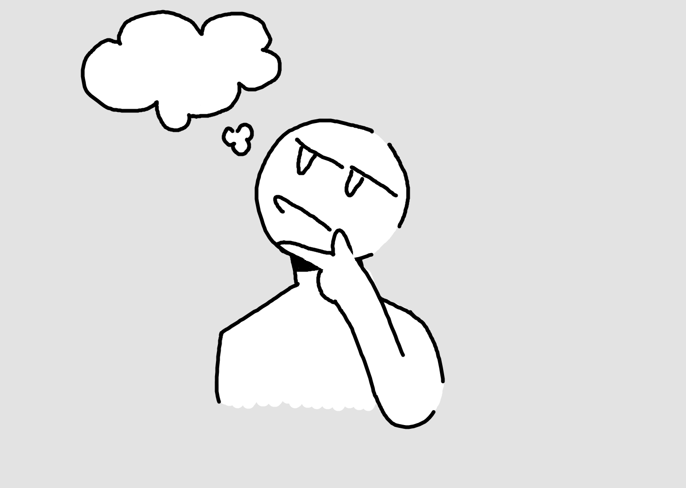
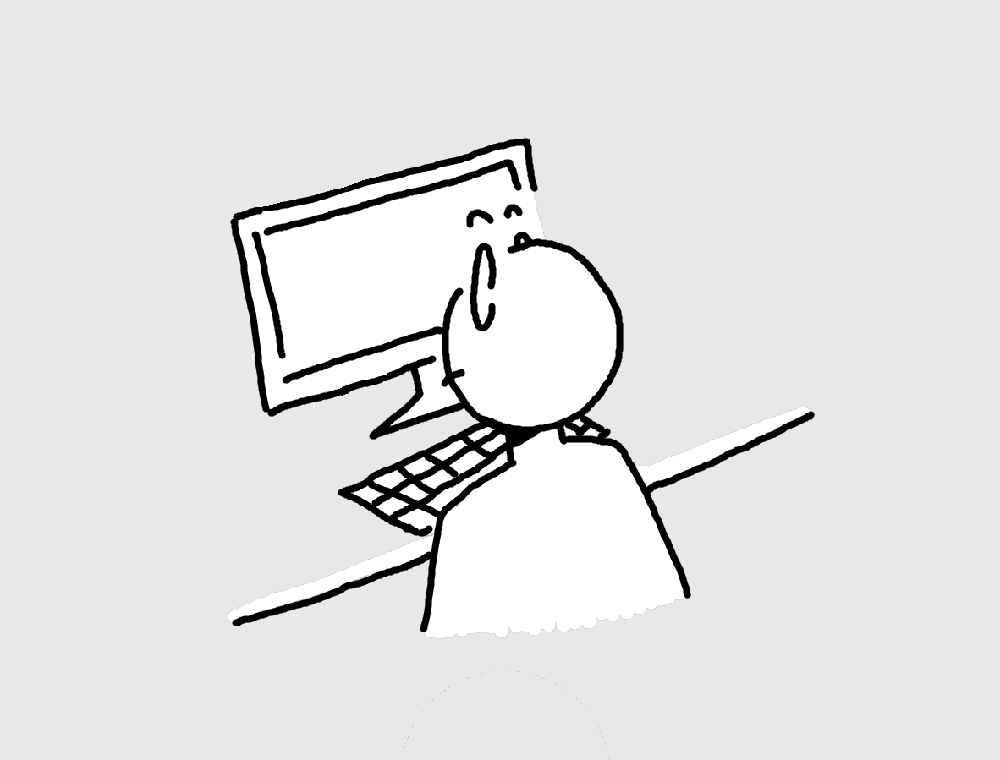
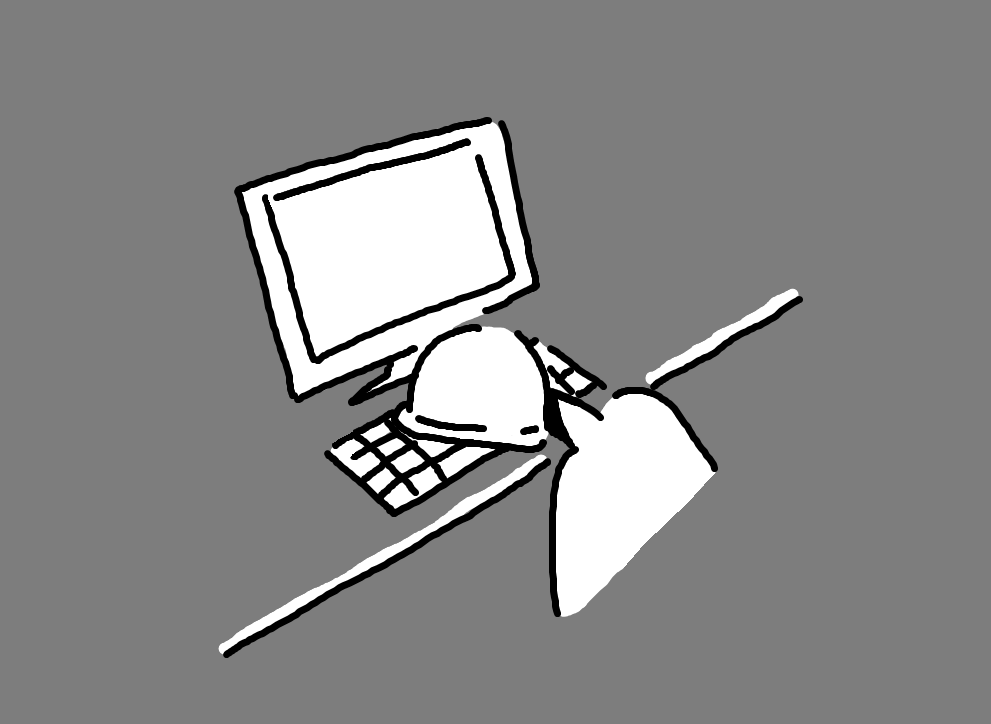
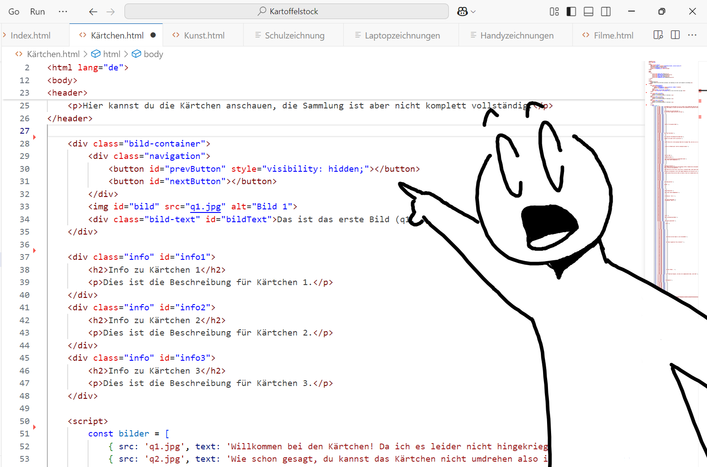
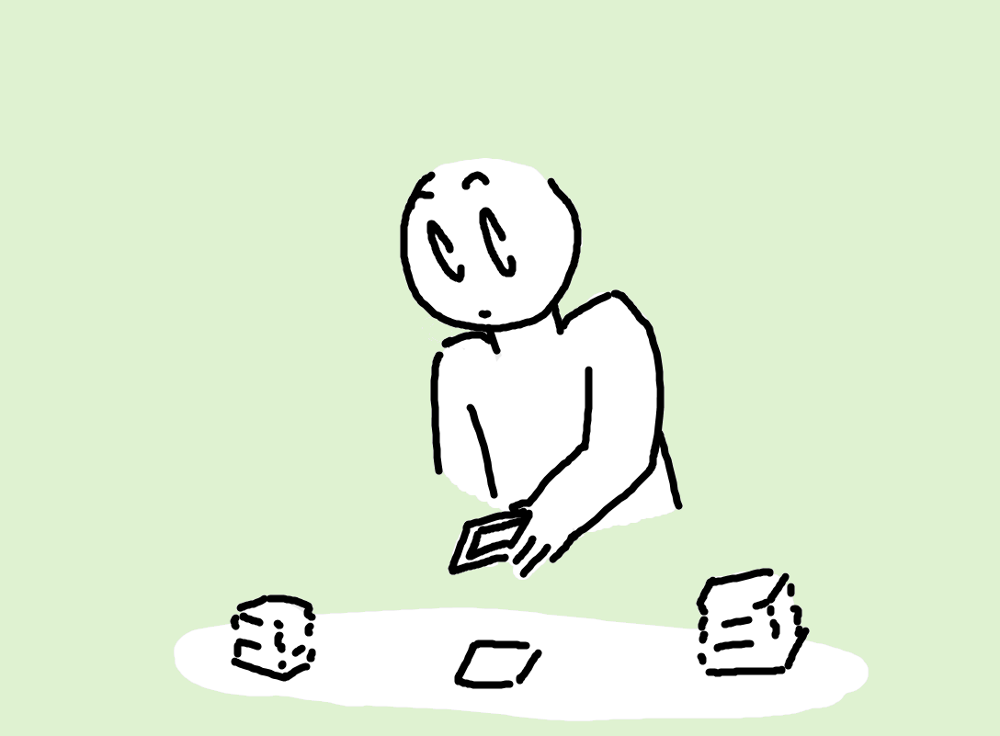
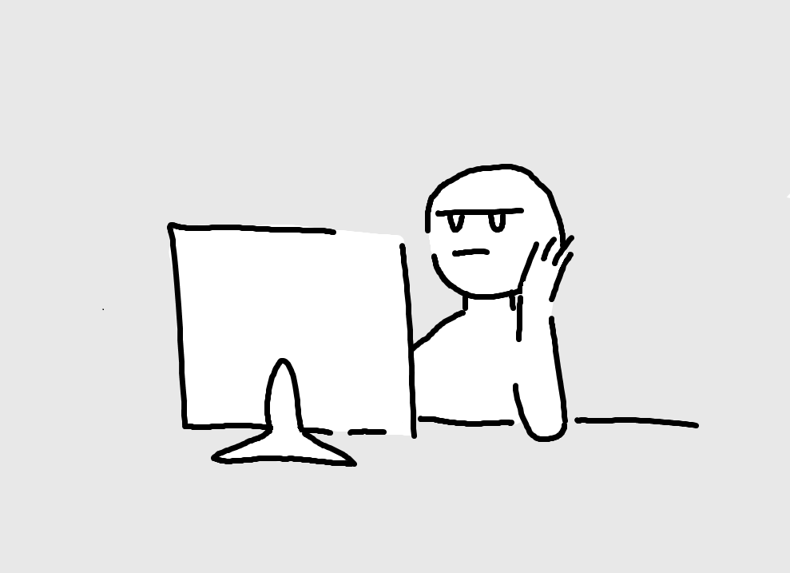
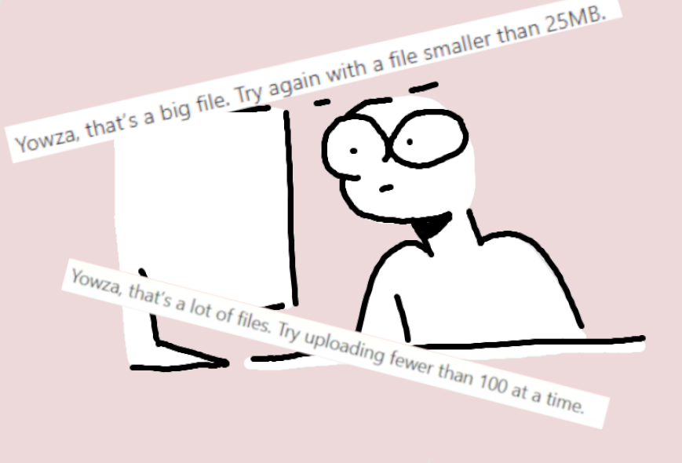
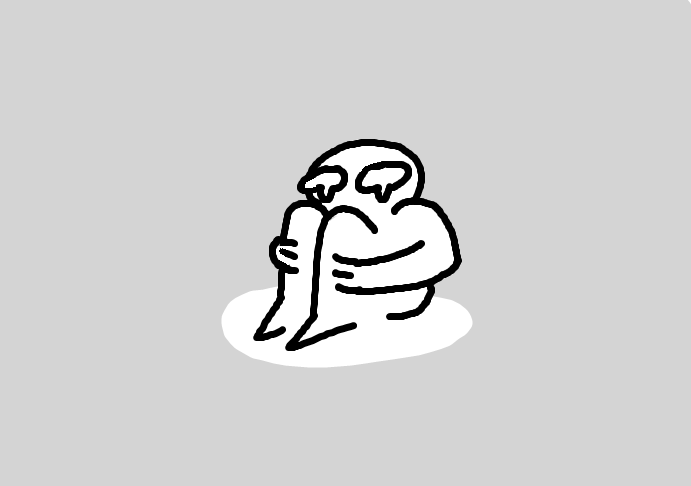
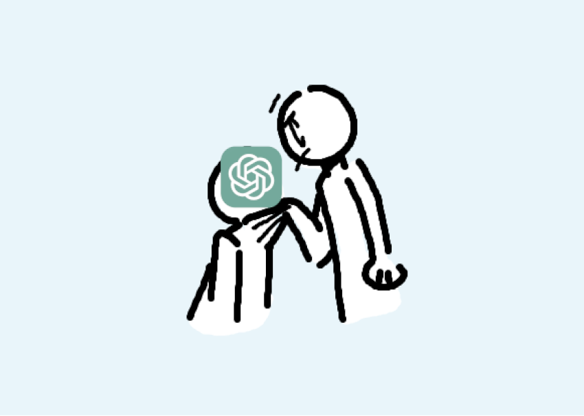
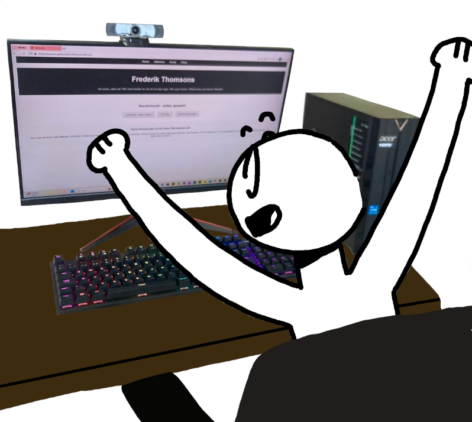

Okay erstmal, oben ist Musik damit es nicht so langweilig ist das hier zu lesen (es kann ein bisschen dauern bis die Musik spielt). Und ich entschuldige mich jetzt schon mal für die Qualität der Musik, habe weder ein gutes Mikrofon noch die Motivation das gleiche Stück so lange aufzunehmen, bis ich es komplett korrekt spiele (oder vollständig spiele). So und jetzt zum richtigen Text. Mir war in den Ferien seeehr langweilig. Darum habe ich das Projekt hier gestartet. Und ich habe es bereut. Es hat so viel länger gedauert als ich erwartet habe, ich habe für drei Tage am Stück, jede wache Minute damit verbracht daran zu arbeiten. Das Programmieren hat davon am meisten aufgeregt (ChatGPT war manchmal echt keine Hilfe). Nein - der mit Abstand schlimmste Part war die Webseite online zu stellen. Ursprünglich hatte ich noch geplant eine Kommentarsektion zu machen, aber dafür hätte ich etwas extra auf einer anderen Website als GitHub aufstellen müssen und das war mir einfach zu anstrengend. Und ich hoffe niemand wird jemals meinen Code sehen, weil der ist ein kompletter Müllhaufen (aber er funktioniert). Ich habe so viel Zeit mit dem Inhalt der Webseite verbracht, dass ich das Design komplett vergessen habe. Und ab dem Punkt bin ich einfach zu faul es zu ändern. Also komm damit klar das die Webseite einbisschen hässlich und minimalistisch ist. Unten habe ich einen kleinen Comic gemacht in dem ich den Prozess kurz zusammengefasst habe. Viel Spass beim umsehen.









